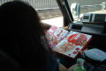

2003.06.01 BAYSIDE JENNY
志
出演: ●[MAINSTAGE] JURASSIC JADE/BATCAVE/ムック/HAIT/FULL
TRAP/MANIPULATED SLAVES/cloud nine/宇頭巻/SONIC AGITATION
[SECOND STAGE]SMASH THE BRAIN／AMUZA／TWICE／BACK STUCK／GLITCH
●MC：フラッシュ・ゴードン●DNCE：志ダンサーズ
●ＪＵＲＡＳＳＩＣ ＪＡＤＥ’Ｓ setlists
ドク・ユメ・スペルマ
くたばりやがれ
Ｐｌａｓｔｉｃ Ｗａｔｅｒ Ｍｏｔｈｅｒ
新曲2
新曲3（Gaza)
新曲5（Fight For What？）
新曲4(ひこうきのうた）
G.D.G
メドレー（Ａｆｔｅｒ Ｋｉｌｌｉｎｇ Ｍａｍ〜D-DAY〜CHAOSE QUEEN〜ドクロ独白〜誰かが殺した日々〜僕らの狂気）
鏡よ鏡
●ＭＥＭＢＥＲ’Ｓ comment
ＨＩＺＵＭＩ
ＮＯＢ
ベイサイド・ジェニーには魔物が住んでいる・・・。
前回出演したときはギターの音が小さくしか出なくって、対バンのギターリストにオーバードライブを借りてノイズだらけで演奏しました。翌日名古屋でライブでしたので、ホテルで早起きし、調べたところピックアップのバッテリーケーブルが見えないところで切れていました。信じられませんでした。
今回は音は出てましたが、全然元気がありません。リハが無かったので、「ここはこんな風に聞こえるのかなぁ？」と思いながら演奏していました。しかし、どう考えてもおかしい。そこからはバタバタになりながらの全力演奏になりました。辛いです。
ホテルに帰ってからも口惜しくて眠れませんでした。
原因は東京に戻ってからのリハーサルの時に解明しましたが・・・。
もお！アンプ直に極力近い形で演奏します！
GEORGE
ＨＡＹＡ
さて、なんと言っても今回は初の全員シングル部屋！あ、関係ないっすね、いやー凄いイベントでしたね、リハ無しっつーのがちょっと大変でしたが、全力で気合い入れて頑張りましたがいかがだったでしょうか？演奏はちょっと（私じゃなく）トラブルが（私じゃなく）ありましたが（私じゃなく）やる気とゆーか、気合いとゆーか、そーいったモンは感じて頂けたかと…本人は悔しくて眠れなかったそうですけどね。でも、あーゆーイベントって楽しいっすよね、沢山みれるし、久々に会う人とかもいたり…またら是非呼んでいただきたいです。はい。
| ALBUM |  |
●BBS comment
嵐が来た・・・。 投稿者：NOB-JURASSIC JADE 投稿日： 5月31日(土)08時56分42秒
嵐ですね。
JURASSIC JADEは強く降る雨に向かって出発します。
明日大阪でお逢いしましょう！
＞てる＠エロ童子 様
これから、大阪に向かいます。雨どうですか？
エロ童子のライブをビデオで見て、とても刺激を受けたよ。
明日は頑張ります！
(無題) 投稿者：てる＠エロ童子 投稿日： 5月31日(土)09時45分35秒
＞ＮＯＢさん
本当ですか？ＮＯＢさんにそう言っていただけるなんて本当に感激です。もうマジでうれしいです。で明日ビデオに入ってたＣＤに入ってなかった曲プラス新曲二曲を含むスタジオ一発どりのテープ持って行くのでそちらの方も聴いてください。またＣＤとは違う感じの曲なんでまたご意見の方お聞かせください。
今現在は京都は雨降ってないのですが午後から降ってきそうな感じです。今朝出発されたんだったら本当に台風に正面衝突になるかもしれないですよ。気をつけてくださいね。
明日は本当に楽しみにしてます。
やっぱり最高でした 投稿者：てる＠エロ童子 投稿日： 6月 3日(火)00時47分53秒
＞JURASSIC JADEのみなさま
昨日のライブ機材トラブルとかもありましたが本当にいいライブでした。特にジョージさんのエフェクターを使ったベースプレイが印象的でした。メドレーも展開が早かったですがなんとかついていけました。そしてまたしてもいっしょに歌いすぎてノドが痛いです。次回の大阪も必ず見に行かせてもらいます。
＞ＮＯＢさん
新しいＭＤの方が音とかは悪いですが自信作なのでそれも含め感想待ってます。そしてまた昨日ＪＪを見ていっぱい刺激を受けました。新曲のイメージがふくらみました。早くも一曲できそうです。早くご一緒できるように日々精進します。
ほんとうにいいライブをありがとうございました。
お疲れさまでした！ 投稿者：イワタ＠SONIC AGITATION 投稿日： 6月 3日(火)21時21分54秒
大阪お疲れさまでした！あぁいうところで対バンできるなんて楽しいですね。
準備中とは言えしっかりライブ観てましたよ、燃えました！またご一緒したい
です！
おつかれさまでした 投稿者：あつき 投稿日： 6月 4日(水)00時31分59秒
６/１おつかれまでした。本当にありがとうございます。出演したバンドのみなさんが満足できたか分からないですが、これからもメタルの為に戦っていきたいと思います。みんなで盛り上げましょう！！
6/1 『志』 投稿者：AMUZA/Bass-AKI 投稿日： 6月 5日(木)18時54分12秒
お疲れ様でした。AMUZAのメンバー全員jurassic jadeさんのライブに感動いたしましたぁぁぁ！ありがとうございました☆またご一緒させていただく機会があれば、よろしくお願い致します。あと、リンクはらせてもらっていいでしょうか？良ければ相互でお願いします。うちのサイトにも是非!!遊びに来て下さい！
「AMUZA HP」
http://ip.tosp.co.jp/i.asp?i=amuzahome
http://ip.tosp.co.jp/i.asp?i=amuzahome
今日は特別な日？ 投稿者：NOB-JURASSIC JADE 投稿日： 6月 7日(土)13時51分14秒
またまた遅くなりました。
大阪でのライブ、たくさんの人たちの応援と手助け感謝です。
俺自身の器材トラブルで水を差してしまいましたが、精一杯のライブをお見せできたと思います。
＞てる＠エロ童子 様
ありがとう！俺がトラブってるとき心配そうに見ていたね、ありがとう。（笑）
たまにしか行けないし、新曲をちゃんと聞かせたかったんだけど・・・残念です。
次回OUTRAGE２０周年記念ライブで取り戻します。よろしくです。
もらった音源は現在チッック中です。もうちょっと待ってください。
＞イワタ＠SONIC AGITATION 様
お疲れ様！良いイヴェントでしたね。
準備してるS.A.の気合が俺たちにも伝わってきたよ。
７月に名古屋に行きます。遊びに来てください。
＞あつき 様
お疲れ様でした！ありがとうございます！とても良いイヴェントでしたね。
あのぉ〜言いにくいんですけど、俺にもう一度チャンスを下さい！お願いします。
＞AMUZA/Bass-AKI 様
お疲れ様でした！ご一緒出来て嬉しいです。
ちなみに俺たちも、ちゃんとAMUZAのライブ見てましたよ。とても楽しめました。
俺自身は、ちょっと恥ずかしいトラブルなんかもあって「とほほ」なんですが、こらからも頑張りますので、どこかでご一緒したときにはよろしくです。
リンクはこちらこそ相互でお願いします。近日中にやります。
メタリカ 投稿者：てる＠エロ童子 投稿日： 6月 7日(土)23時35分14秒
＞ＮＯＢさん
機材トラブルもありましたがＪＪらしい世界がありそして並々ならぬパワーが新曲から伝わりましたよ。たくさんのＪＪ汁を味あわせていただきました。次回大阪でも楽しみにしてますね。
音源チェックしてもらってありがとうございます。メンバー内でＬＩＮＫのところに何て書かれるんだろうって話してます。
あとＮＯＢさん、メタリカの新譜がとんでもなくかっこいいですよ。まさにメタリカとゆう感じですばらしいです。是非聴いてみてください。
志 投稿者：Sound of silence/ゆう 投稿日： 6月 8日(日)21時56分25秒
大変遅くなり、お疲れ様でした！ぼくらの出番が終わり、ダッシュで見に行きました！ライヴ直後なのに、モッシュをしました！！すごい衝撃的でかなり興奮しました！最高です！
あと、リンクとかは相互お願いできないでしょうか？大変あつかましいのですが、、、
志で１曲目の題名を教えていただけないでしょうか？
http://i.tosp.co.jp/i.asp?i=SOSSITE
ありがとうございます！ 投稿者：AMUZA/Bass-AKI 投稿日： 6月 8日(日)22時30分22秒
こっちも早速リンクはらせて頂きますぅ。僕らのライブ見てくれてたんですねぇ〜嬉しいです！また是非ご一緒したいです→僕らもこれからも頑張りますのでその時はこちらこそど〜ぞよろしくお願いしますですぅm(__)m
６/１｢志｣おつかれ様でした。 投稿者：ＡＭＵＺＡ/Ｇｔ洋樹 投稿日： 6月 9日(月)14時52分40秒
ＡＭＵＺＡです。先日は素晴らしいＳＨＯＷを体感させて頂き有り難う御座いました。ジュラシックジェイドさんは個人的にも昔からだいすきだったんで一緒にライブ出来る事になった時はめちゃめちゃ嬉しかったです。かなり期待以上に満足させて頂きました。とにかくＨＩＺＵＭＩさんを間近に見れて感激でした〜。あと相互リンクの件有り難う御座います。こちらも早速はらせて頂きました。また同じステージでライブ出来る日を心待ちにしております。次回こそは話したいです！今後とも宜しくお願いします。またお暇な時にでもうちのＨＰ遊びに来て頂けると嬉しいです！しょぼいですが(笑)それでわ失礼しました！
http://ip.tosp.co.jp/i.asp?i=amuzahome
スレスレでぇす。 投稿者：NOB-JURASSIC JADE 投稿日： 6月15日(日)15時25分43秒
またまたご無沙汰になってしまいました。すいません。
ムシムシしますね。その上風邪が大流行。この１〜２週間の間に２度ほどキャッチしましたが、なんとか乗り切っています。
＞てる＠エロ童子 様
メタリカ購入しました。大きな変化だね。
ジェームスのアルコール依存症からの復帰記念的意味合いが濃いね。
このパンクな感じは大好きです。
＞Sound of silence/ゆう 様
遅くなりました！今更なんですが、お疲れ様でした。
リンクはもちろん喜んでやらせてもらいます。
一曲目は「ドク・ユメ・スペルマ」という曲です。アルバムタイトルにもなってます。
今後ともよろしくです。どこかで、ご一緒しましょう！
＞AMUZA/Bass-AKI 様
リンクもたもたしててすいません。至急やります。
＞ＡＭＵＺＡ/Ｇｔ洋樹 様
お疲れさまでした！リンクすいません、もたもたで。
どこかで、やりましょうね、必ず。
ご返答ありがとうございます 投稿者：Sound of silence/ゆう 投稿日： 6月19日(木)20時47分13秒
早速LINKさせていただきました！ありがとうございます！また、機会があればおねがいします！PS,SEはAKIRAのサントラですねー僕らも使っていましたよー笑 カラン、コロン
BACK TO